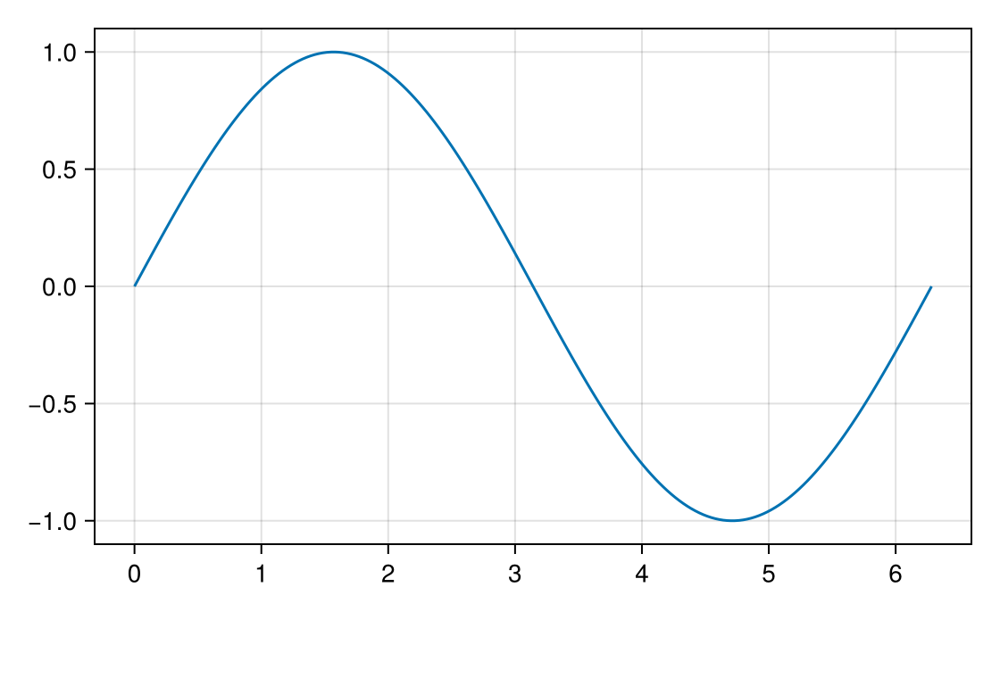

Sliders, toggles and menus
Lay out Makie's own Slider, Toggle, Checkbox, IntervalSlider or Menu in the figure, name it in masque, and the reader can use it in the notebook. Each one becomes a field of the @bind value that holds its plain value: a number from the slider's range, true or false, a (low, high) pair, or the option chosen from the menu.
Notebook as text
Move the slider or flip the toggle, and the last cell shows both values.
begin
xs = range(0, 2π; length = 200)
fig = Figure(size = (560, 380))
ax = Axis(fig[1, 1:2])
wave = lines!(ax, xs, sin.(xs))
freq = Slider(fig[2, 1]; range = 1:0.5:5, startvalue = 1)
dots = Toggle(fig[2, 2]; active = false)
nothing
end@bind w masque(fig, (freq = freq, dots = dots))
w.freq, w.dotsThe slider and the toggle look like Makie's and sit where the figure's layout put them. Moving one changes w when you let go, so cells that use w respond.
Redraw the figure from a control
With onchange, the figure follows the controls without running the cell again. Change your plots with Makie's update!, then move the slider or switch the toggle:
Notebook as text
@bind w masque(
fig, (freq = freq, dots = dots);
onchange = state -> update!(wave, xs, sin.(state.freq .* xs); linestyle = state.dots ? :dot : :solid)
)
While the reader drags the slider, the curve follows it. To redraw only when they let go, build the slider with update_while_dragging = false. Cells that use w see the setting once the reader lets go:
Masque also sets the block's own value before it calls your function, so freq.value[] agrees with state.freq, and code written for GLMakie with on(freq.value) or @lift keeps working.
Name every control
A block needs a name, which becomes its field. Pass it in a NamedTuple, as above, or in bind: masque(fig; bind = (freq = freq, dots = dots)). A block in the figure that masque isn't given would look live and do nothing, so masque raises an error naming its kind. Name it, or take it out of the figure.
Buttons, text boxes and SliderGrid are pictures for now, and masque warns when the figure has one, since the reader could click it and nothing would happen.
With WGLMakie loaded, Slider also names a slider from Bonito, so Julia asks which one you mean; write Makie.Slider instead.
In a static HTML export the controls still set the @bind value; only onchange needs a running notebook.
Next: Update the figure has more on what onchange can change.